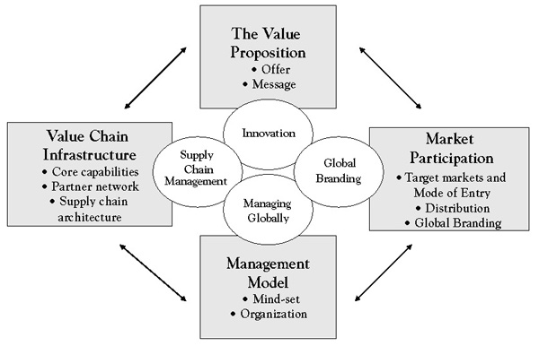
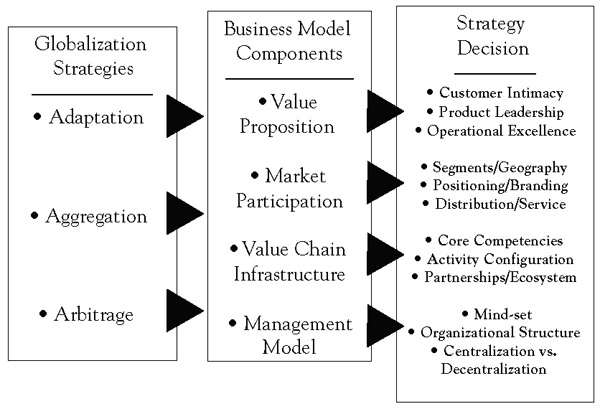

Every company has a core domestic strategy, although it may not always be explicitly articulated. This strategy most likely evolved over time as the company rose to prominence in its domestic market and reflects key choices about what value it provides to whom and how, and at what price and cost. At any point in time, these choices are reflected in the company’s primary business model, a conceptual framework that summarizes how a company creates, delivers, and extracts value. A business model is therefore simply a description of how a company does business. As shown in Figure 4.1 "Components of a Business Model", it describes who its customers are, how it reaches them and relates to them (market participation); what a company offers its customers (the value proposition); with what resources, activities, and partners it creates its offerings (value chain infrastructure); and, finally, how it organizes and manages its operations (global management model.
Figure 4.1 Components of a Business Model
A company’s value propositionConsists of the full range of tangible and intangible benefits that a company provides to its customers (stakeholders). composes the core of its business model; it includes everything it offers its customers in a specific market or segment. This comprises not only the company’s bundles of products and services but also how the company differentiates itself from its competitors. A value proposition therefore consists of the full range of tangible and intangible benefits a company provides to its customers (stakeholders).
The market participation dimensionDimension of a firm’s business model that describes the markets it serves; its distribution methods; and how it promotes and advertises its value proposition to customers. of a business model has three components. It describes what specific markets or segments a company chooses to serve, domestically or abroad; what methods of distribution it uses to reach its customers; and how it promotes and advertises its value proposition to its target customers.
The value chain infrastructure dimensionDimension of a firm’s business that deals with how a firm uses its internal resources and capabilities and partner network to support the market delivery of its value proposition. of the business model deals with such questions as, what key internal resources and capabilities has the company created to support the chosen value proposition and target markets; what partner network has it assembled to support the business model; and how are these activities organized into an overall, coherent value creation and delivery model?
The global management submodelSummarizes a firm’s choices about a suitable global organizational structure and management policies. summarizes a company’s choices about a suitable global organizational structure and management policies. Global organization and management style are closely linked. In companies that are organized primarily around global product divisions, management is often highly centralized. In contrast, companies operating with a more geographic organizational structure are usually managed on a more decentralized basis.
It used to be that each industry was characterized by a single dominant business model. In such a landscape, competitive advantage was won mainly through better execution, more efficient processes, lean organizations, and product innovation. While execution and product innovation obviously still matter, they are no longer sufficient today.
Companies are now operating in industries that are characterized by multiple and coexisting business modelsThe conceptual framework that summarizes how a firm creates, delivers, and extracts value while doing business.. Competitive advantage is increasingly achieved through focused and innovative business models. Consider the airline, music, telecommunications, or banking industries. In each one, there are different business models competing against each other. In the airline industry, for example, there are the traditional flag carriers, the low-cost airlines, the business-class-only airlines, and the fractional private-jet-ownership companies. Each business model embodies a different approach to achieving a competitive advantage.
Southwest Airlines’ business model, for example, can be described as offering customers an alternative to traveling by car, bus, or train by giving them a no-frills flight service, enhanced through complementary activities. Southwest’s business model differs from those of other major U.S. airlines along several dimensions. It is about more than low fares, point-to-point connections, and the use of a standardized fleet of aircraft. A key differentiating factor is the way Southwest treats its employees—putting them first with profit-sharing and empowerment programs. Another is the fun experience Southwest creates on board and in the terminal, with jokes, quizzes, and the relaxed behavior of the cabin crew and ground staff. Yet another is the legendary care and attention Southwest puts into its customer service. Not surprisingly, Southwest’s demonstrably successful business model has spawned numerous imitators around the world, including Ryanair, EasyJet, JetBlue, and Air Arabia.
Apple provides an example of why it is useful to focus on a company’s overall business model rather than individual components such as products, markets, or suppliers. While it is tempting to think of the iPod as a successful product, it is, in fact, much more. Less visible than redefining the size, look, and functionality of an MP3 player, Apple’s real innovation was creating a digital rights management system that could satisfy the intellectual property concerns of the music industry while simultaneously creating a legal music download service that would satisfy consumers. Thus, Apple’s real breakthrough was not good product design, it was the creation of a revolutionary business model—one that allowed people to find and legally download high-quality music files extremely easily but that would not allow the pirating of entire albums. Put differently, the iPod was the front-end of a very smart and highly differentiated platform that worked for both the music industry and the consumer. That platform, the iTunes Music Store—which now also offers digital music videos, television shows, iPod games, and feature-length movies—is at the very heart of Apple’s strategic move into consumer electronics, allowing more recent Apple products like the iPhone and Apple TV to sync with PCs as easily as the iPod. In fact, iTunes is the trojan horse with which Apple plans to capture a significant share of the home entertainment market.
Describing a company’s business strategy in terms of its business model allows explicit consideration of the logic or architecture of each component and its relationship to others as a set of designed choices that can be changed. Thus, thinking holistically about every component of the business model—and systematically challenging orthodoxies within these components—significantly extends the scope for innovation and improves the chances of building a sustainable competitive advantage.
When a company decides to expand into foreign markets, it must take its business model apart and consider the impact of global expansion on every single component of the model. For example, with respect to its value proposition, a company must decide whether or not to modify its company’s core strategyA strategy that a firm develops over time that reflects the firm's key choices about what value it provides to whom in its markets and how, and at what price and cost. as it moves into new markets. This decision is intimately linked to a choice of what markets or regions to enter and why. Once decisions have been made about the what (the value proposition) and where (market coverage) of global expansion, choices need to be made about the how—whether or not to adapt products and services to local needs and preferences or standardize them for global competitive advantage; whether or not to adopt a uniform market positioning worldwide; which value-adding activities to keep in-house, which to outsource, and which to relocate to other parts of the world—and so on. Finally, decisions need to be made about how to organize and manage these efforts on a global basis. Together, these decisions define a company’s global strategic focus on a continuum from a truly global orientation to a more local one. Crafting a global strategyDescribes a firm’s intention to change or adapt its core (domestic) business model to achieve a competitive advantage as the firm engages in globalized operations. therefore is about deciding how a company should change or adapt its core (domestic) business model to achieve a competitive advantage as the firm globalizes its operations.
Linking Pankaj Ghemawat’s generic strategy framework for creating a global competitive advantage, introduced in the Chapter 3 "Generic Strategies for Global Value Creation", with the above business model concept and the full array of globalization decisions a company faces when it evaluates its global options, defines the global strategy formulation (conceptual) framework shown in Figure 4.2 "Global Strategy: A Conceptual Framework". Generic value creation options need to be evaluated for each business model component to address a range of globalization decisions.
Part 2 of this book is organized using this framework, with chapters devoted to the globalization of the different parts of the business model or the skills needed to do so. Before we embark on this journey, the balance of this chapter is devoted to introducing the concept of value disciplines—generic strategic foci for creating value for customers and the key in defining a company’s value proposition—and its implications for the other components of the business model.
Figure 4.2 Global Strategy: A Conceptual Framework
Consider the challenges Microsoft faced in going to China. Today, Bill Gates is a local hero. On a recent visit he met with four members of the Politburo in a single day; most executives would count themselves lucky to talk with one of China’s top leaders. Last spring, President Hu Jintao toured the Microsoft campus in Redmond, Washington, and was treated to a dinner at Gates’s home.
It has not always been this way. Microsoft stumbled for years after entering China in 1992 and lost money there for over a decade. It finally became apparent that almost none of the success factors that drove the company’s performance in the United States and Europe applied to China. To succeed there, Microsoft had to become the “un-Microsoft,” pricing at rock bottom instead of charging hundreds of dollars for its Windows operating system and Microsoft Office applications; abandoning the public-policy strategy it used elsewhere of protecting its intellectual property at all costs; and closely partnering with the government instead of fighting it, as in the United States—a decision that has opened the company to criticism from human rights groups.
The story begins 15 years ago, when Microsoft sent a couple of sales managers into China from Taiwan. Their mission was to sell software at the same prices the company charged elsewhere. It did not work. The problem was not brand acceptance—everyone was using Windows. But no one was paying. Counterfeit copies could be bought on the street for a few dollars. Market share simply did not translate into revenue.
Microsoft fought bitterly to protect its intellectual property. It sued other companies for illegally using its software but lost regularly in court. Country managers came and went—five in one 5-year period. Two of them later wrote books criticizing the company. One, Juliet Wu, whose Up Against the Wind became a local best seller, wrote that Microsoft heartlessly sought sales by any means, that its antipiracy policy was needlessly heavy-handed, and that her own efforts to help bosses in Redmond understand China had been rebuffed.
To add insult to injury, Beijing’s city government started installing free open-source Linux operating systems on workers’ PCs. (The Chinese Academy of Sciences promoted a version called Red Flag Linux.) Meanwhile, security officials were troubled that government and military operations depended on Microsoft software made in the United States.
In 1999, Gates sent a senior executive, who headed the company’s public-policy efforts, to figure out why Microsoft was so hated. After extensive investigation, the executive concluded that Microsoft’s business model in China was wrong: the company had assigned executives that were too junior, selling was overemphasized, and the company’s business practices did not recognize the importance of collaborating with the government.
In response, Gates sent 25 of Microsoft’s 100 vice presidents on a weeklong “China Immersion Tour.” The company hired former Secretary of State Henry Kissinger for advice and to open doors. And it told leaders that Microsoft wanted to help China develop its own software industry, an urgent government priority. The company even commissioned a McKinsey study for Chinese officials in 2001 that, among other things, recommended improving the protection of intellectual property.
The company also initiated talks with Chinese security officials to convince them that Microsoft’s software was not a secret tool of the U.S. government. As a result, in 2003, the company offered China and 59 other countries the right to look at the fundamental source code for its Windows operating system and to substitute certain portions with their own software—something Microsoft had never allowed in the past. Now when China uses Windows in sensitive applications—such as in the president’s office and in its missile systems—it can install its own cryptography.
The opening of a research center in Beijing in 1998 proved to be a real turning point. Created because Gates was impressed with the quality of the country’s computer scientists, the laboratory helped Microsoft revamp its image. It began accumulating an impressive record of academic publications, helped lure back smart émigré scientists, and contributed key components to globally released products like the Vista operating system. The lab soon became, according to local polls, the most desirable place in the country for computer scientists to work.
Microsoft executives had also concluded that China’s weak intellectual property enforcement laws meant its usual pricing strategies were doomed to fail. Arguing that while it was terrible that people in China pirated so much software, Gates decided that if they were going to pirate anybody’s software, he would certainly prefer it be Microsoft’s.
In hindsight, it is clear that tolerating piracy turned out to be Microsoft’s best long-term strategy, and that it is the reason Windows is used on an estimated 90% of China’s almost 200 million PCs. Competing with Linux is easier when there is piracy than when there is not: you can get the real thing, and you get it at the same price. In China’s back alleys, Linux often costs more than Windows because it requires more disks. And Microsoft’s own prices have dropped so low, it now sells a $3 package of Windows and Office to students.
In 2003, Microsoft took a quantum leap forward in China by hiring Tim Chen, who had been running Motorola’s China subsidiary. Chen arrived with entrée to the corridors of power and a practiced understanding of how a Western company could succeed in China. He kept up the blitz of initiatives. Microsoft made Shanghai a global center to respond to customer e-mails. It began extensive training programs for teachers and software entrepreneurs. And it began to work with the ministry of education to finance 100 model computer classrooms in rural areas.
These actions served to change the perception that Microsoft had mainly come to promote antipiracy and to sue people and demonstrated that it had a long-term vision. In the following years, Microsoft invested substantially in China and even invited officials to help decide in which local software and outsourcing companies it should invest. By doing so, it successfully leveraged the synergy that existed between the need of the Chinese economy to have local software capability and the company’s need for an ecosystem of companies using its technology and platform. At the same time, the Chinese government started thinking more like Microsoft: it required central, provincial, and local governments to begin using legal software. The city of Beijing now pays for software its employees had previously pirated.
In another boost for Microsoft, last year, the government required local PC manufacturers to load legal software on their computers. Lenovo, the market leader, had been shipping as few as 10% of its PCs that way, and even U.S. PC makers in China were selling many machines “naked.” Another mandate requires gradual legalization of the millions of computers in state-owned enterprises. As a consequence, the number of new machines shipped with legal software nationwide has risen from about 20% to more than 50% in recent years.
A business model—and a company’s principal value proposition in particular—is shaped by the firm’s underlying value creation strategy or value disciplineA statement of strategic focus that describes different ways a firm can differentiate itself from competitors., a term coined by Michael Treacy and Fred Wiersema to describe different ways companies can differentiate itself from competitors.This section is based on Treacy and Wiersema (1993). A value discipline is more than just a benefit statement—it is a statement of strategic focus and provides a context for a company to set its corporate vision and objectives, to target its most profitable customers, and to focus and align its activities.
In contrast to more traditional market segmentation strategies, which group customers by geography, product mix, or demographics, value disciplines segment customers according to the full range of benefits that are most valuable to them. Specifically, Treacy and Wiersema identify three generic value disciplines: operational excellence, customer intimacy, and product leadership.
A strategy of operational excellenceThe relentless focus on providing customers with reliable products or services at competitive prices and delivered with minimal difficulty or inconvenience. is defined by a relentless focus on providing customers with reliable products or services at competitive prices and delivered with minimal difficulty or inconvenience. Dell Inc., for instance, is a master of operational excellence. Dell has shown buyers of electronics that they do not have to sacrifice quality or state-of-the-art technology in order to buy PCs, printers, or other products easily and inexpensively. By selling to customers directly, building to order rather than to inventory, and creating a disciplined, extremely low-cost culture, Dell has been able to undercut its competitors in price yet provide high-quality products and service. Other leaders in operational excellence include Wal-Mart, Jet Blue, ING bank, and Federal Express.
Companies pursuing operational excellence are relentless in seeking ways to minimize overhead costs, to eliminate intermediate production steps, to reduce transaction and other “friction” costs, and to optimize business processes across functional and organizational boundaries. They focus on delivering their products or services to customers at competitive prices and with minimal inconvenience. Because they build their entire businesses around these goals, these organizations do not look or operate like other companies pursuing other value disciplines.
An operationally excellent company proactively designs its entire business model for its targeted customer segments, paying particular attention to speed, efficiency, and cost. This includes critically reevaluating business processes, reassessing the complete supply chain, and reaching out to suppliers, distributors, and customers to create a larger, more integrated approach to meeting customer needs.
Achieving market leadership through operational excellence requires the development of a business model that pervades the entire organization. Thus, becoming operationally excellent is a challenge not just for the manufacturing department but for the entire company. And while operationally excellent companies are focused on cost and efficiency, they are not necessarily the lowest cost producer or supplier. The notion that an operationally excellent company is fixated on costs and cost cutting, has a rigid command and control organization, and is focused on plant and internal efficiencies is a limited view that seriously misstates the intent and goals of operational excellence.
In April of 2009, Air Arabia, the first and largest low-cost carrier (LCC) in the Middle East and North Africa, announced that it was recognized by Airbus, one of the world’s leading aircraft manufacturers, for achieving the highest operational utilization in the world. This is the fourth consecutive year that Air Arabia maintained the lead among all global airlines operating Airbus A320 aircraft. According to the latest reports from Airbus, Air Arabia achieved the highest aircraft utilization in 2008, with 99.8% operational reliability.
Operational excellence and service reliability are integral to Air Arabia’s success. In selecting Air Arabia for its operational excellence rankings, Airbus conducted a detailed technical analysis of all carriers in the segment. Air Arabia recorded the highest indicators for operational reliability and aircraft utilization reflecting the carrier’s extremely high maintenance and technical standards.
Currently, Air Arabia has a fleet of 16 Airbus A320 aircraft and has already placed an order of 44 additional Airbus A320s. By the end of 2009, Air Arabia expected to add two more aircraft and increase its fleet size to 18.
Air Arabia (PJSC), listed on the Dubai Financial Market, is the Middle East and North Africa’s leading low-cost carrier. Air Arabia commenced operations in October 2003 and currently operates a fleet of 16 new Airbus A320 aircraft, currently serving 44 destinations across the Middle East, North Africa, South Asia, and Central Asia through its main hub in Sharjah, United Arab Emirates.
Air Arabia is modeled after leading American and European low-cost airlines, and its business model is customized to accommodate local preferences. Its main focus is to make air travel more convenient through Internet bookings and through offering the lowest fares in the market along with the highest levels of safety and service standards.
A focus on customer intimacyStrategy that focuses on segmenting and targeting markets precisely and then tailoring offerings to exactly match the demands of those niches., the second value discipline, means segmenting and targeting markets precisely and then tailoring offerings to exactly match the demands of those niches. Companies that excel in customer intimacy combine detailed customer knowledge with operational flexibility so they can respond quickly to almost any need, from customizing a product to fulfilling special requests. As a consequence, these companies engender tremendous customer loyalty. Nordstrom, the department store, for example, is better than any other company in its market of customer service and getting the customer precisely the product or information he or she wants.
While companies pursuing operational excellence concentrate on the operational side of their business models, those pursuing a strategy of customer intimacy continually tailor and shape products and services to fit an increasingly fine definition of the customer. This can be expensive, but customer-intimate companies are willing to take a long-term perspective and invest to build lasting customer loyalty. They typically look at the customer’s lifetime value to the company, not the value of any single transaction. This is why employees in these companies will do almost anything—with little regard for initial cost—to make sure that each customer gets exactly what he or she really wants. Nordstrom is a good example of such a company. A few years ago, Home Depot was known for its customer intimacy; more recently, however, it has strayed from this strategic focus.
Customer-intimate companies understand the difference between profit or loss on a single transaction and profit over the lifetime of their relationship with a single customer. Most companies know, for instance, that not all customers require the same level of service or will generate the same revenues. Profitability, then, depends in part on maintaining a system that can identify, quickly and accurately, which customers require what level of service and how much revenue they are likely to generate. Sophisticated companies now routinely use a telephone-computer system capable of recognizing individual customers by their telephone numbers when they call. Such systems allow differential levels of service for different customer groups. Clients with large accounts and frequent transactions are routed to their own senior account representative; those who typically place only an occasional order are referred to a more junior employee or a call center. In either case, the customer’s file appears on the representative’s screen before the phone is answered. What is more, such a system allows the company to direct specific value-added services or products to specific groups of clients.
Some years ago, Kraft USA decided to strengthen its focus on customer intimacy and created the capacity to tailor its advertising, merchandising, and operations in a single store, or in several stores within a supermarket chain, to the needs of those stores’ particular customers. To do so, it had to develop new information systems and analytical capabilities and educate its sales force to create multiple, so-called micromerchandising programs for a chain that carries its products. In other words, Kraft first had to change itself: it had to create the organization, build the information systems, and educate and motivate the people required to pursue a strategy of customer intimacy.
Like most companies that pursue customer intimacy, Kraft decentralized its marketing operations in order to empower the people actually dealing with the customer. Today, Kraft salespeople are trained and rewarded to work with individual store managers and regional managers to create customized promotional programs. To do so, the company gives them the data they need to make recommendations to store managers and to shape promotional programs such as consumer purchases by store, category, and product and their response to past price and other promotions. At corporate headquarters, Kraft trade marketing teams sort and integrate information from multiple sources to supply the sales force with a menu of programs, products, value-added ideas, and selling tools. For instance, the trade marketing team sorted all shoppers into six distinct groups, with names such as “full-margin shoppers,” “planners and dine-outs,” and “commodity shoppers.”
Isadore Sharp, one of four children of Polish parents who immigrated to Toronto before his birth in 1931, opened his first hotel—the Four Seasons Motor Hotel—in 1961 with 125 affordable rooms in a rather seedy area outside the core of downtown Toronto.
At that time, a would-be hotelier had two choices. He could build a small motel with fewer than 200 rooms and simple amenities at relatively low cost. The alternative was a large downtown hotel catering to business travelers. Such hotels usually had at least 750 guest rooms and extensive amenities, including conference facilities, multiple restaurants, and banquet rooms. Each type of hotel had its advantages as well as distinct drawbacks. For all its comfort and intimacy, the small motel was not an option for the business traveler who needed a well-appointed meeting room or state-of-the-art communications facilities. Large hotels produced a big enough pool of revenues to fund the features the market demanded but tended to be cold and impersonal.
But after opening his fourth hotel, Sharp decided to experiment and combine the best of the small hotel with the best of the large hotel. He envisioned a medium-sized hotel, big enough to afford an extensive array of amenities but small enough to maintain a sense of intimacy and personalized service. Sharp reasoned that if the Four Seasons offered distinctly better service than its competitors, it could charge a substantial premium, boosting revenue per room to the point where it could offer top-of-the-line amenities. Before he could ask guests to pay a superpremium room rate, though, Sharp understood that he would have to offer them an entirely different kind of service.
Luxury, at that time, was chiefly defined in terms of architecture and décor. Sharp decided to redefine luxury as service—a support system to fill in for the one left at home and the office. Four Seasons became the first to offer shampoo in the shower; 24-hour room service; bathrobes; cleaning and pressing; a two-line phone in every guest room; a big, well-lighted desk; and 24-hour secretarial services. Defying the traditional approach in the industry, which was to set a relatively fixed standard of physical and service quality across the entire chain, Sharp made sure each city’s Four Seasons reflected the local color and culture.
To free up capital and focus its senior management on providing service rather than managing real estate and financing, Four Seasons also became the first big hotel company to manage, rather than own, the hotel facilities that bore its name.
Redefining the way it treated its own employees also helped sharpen Four Seasons’ customer focus. Rather than treating its employees as disposable, Four Seasons distinguished itself by hiring more for attitude than experience, by establishing career paths and promotion from within, and by paying as much attention to employee concerns as guest complaints. It pushed responsibility down and encouraged self-discipline by setting high performance standards and holding people accountable, adhering to the company’s credo, “generating trust.” Significantly, Four Seasons has no separate customer service department. Each employee at the Four Seasons is not just a member of the customer service department but is in charge of it.
Today, with 73 hotels in 31 countries, and with 25 properties under development, Four Seasons is considerably larger than the next biggest luxury player. Condé Nast Traveler ranks 18 Four Seasons hotels in its global “Top 100” list, more than 3 times the next most-cited chain. A Four Seasons signifies that a city has become a global destination.
Finally, product leadershipStrategy that focuses on offering leading-edge products and services that enhance the customer’s use or application of the product, thereby making rivals’ goods obsolete., the third discipline, means offering customers leading-edge products and services that consistently enhance the customer’s use or application of the product, thereby making rivals’ goods obsolete. Companies that pursue product leadership are innovation-driven, and they constantly raise the bar for competitors by offering more value and better solutions. Product leaders work with three basic principles. First, they focus on creativity; constant innovation is the key to their success. They look for new ideas inside as well as outside the company, have an “experimentation is good” mind-set, and reward risk taking. Second, they know that in order to be successful, they must be fast in capitalizing on new ideas; they know how to commercialize new ideas quickly. To do so, all their business and management processes have to be engineered for speed. Third, product leaders must relentlessly pursue new solutions to the problems that their own latest product or service has just solved. In other words, if anyone is going to render their technology obsolete, they prefer to do it themselves.
Examples of companies that use product leadership as a cornerstone of their strategies include BMW, Intel, Apple, and Nike. These companies have created and maintain a culture that encourages employees to bring ideas into the company and, just as important, they listen to and consider these ideas, however unconventional and regardless of the source. In addition, product leaders continually scan the landscape for new product or service possibilities; where others see glitches in their marketing plans or threats to their product lines, companies that focus on product leadership see opportunity and rush to capitalize on it.
Product leaders avoid bureaucracy at all costs because it slows commercialization of their ideas. Managers make decisions quickly since, in a product leadership company, it is often better to make a wrong decision than to make a late or not at all. That is why these companies are prepared to decide today, then implement tomorrow. Moreover, they continually look for new ways—such as concurrent engineering—to shorten their cycle times. Japanese companies, for example, succeed in automobile innovation because they use concurrent development processes to reduce time to market. They do not have to aim better than competitors to score more hits on the target because they can take more shots from a closer distance.
Product leaders are their own fiercest competitors. They continually cross a frontier, then break more new ground. They have to be adept at rendering obsolete the products and services that they have created because they realize that if they do not develop a successor, another company will. Apple and other innovators are willing to take the long view of profitability, recognizing that whether they extract the full profit potential from an existing product or service is less important to the company’s future than maintaining its product leadership edge and momentum. These companies are never blinded by their own successes.
Finally, product leaders also possess the infrastructure and management systems needed to manage risk well. For example, each time Apple ventures into an untapped area, it risks millions of dollars as well as its reputation. It takes that chance, though, in part because its hybrid structure allows it to combine the economies of scale and resource advantages of a multibillion-dollar corporation with the cultural characteristics of a startup company.
Figure 4.3 "Choosing a Value Proposition: Value Disciplines" depicts strategic focus in terms of the three value disciplines discussed here and summarizes how each responds to a particular set of competitive drivers and customer needs.
Figure 4.3 Choosing a Value Proposition: Value Disciplines

How does Apple consistently redefine each market it enters by creating products that leapfrog the competition? First, it takes clarity of purpose and resolve: it may take years to cultivate new skills and build the right new product. Second, a significant investment in infrastructure is required: for example, Apple supports a dedicated innovation team. Third, consistently redefining markets requires strategic clarity: innovating effectively means creating your own opportunities in a crowded marketplace to avoid both mediocrity and commoditization. Fourth, patience is essential: creativity does not always follow the clock. False starts and the occasional flop are part of the process and must not only be tolerated but be sources of learning. Fifth, strong leadership is a prerequisite: innovation does not happen by committee. Visionaries with effective management skills are hard to find, but they are a critical ingredient for success.
Clarity of Purpose and Resolve
Apple’s company motto, “Think Different,” provides a hint at how Apple maintains focus and its introspective, self-contained operating style that is capable of confounding competitors and shaking up entire industries. Internally, Apple barely acknowledges competition. It is the company’s ability to think differently about itself that keeps Apple at the head of the pack. Current and past employees tell stories about products that have undergone costly overhauls just to improve one simple detail. Other products are canceled entirely because they do not fit in or do not perform up to par. Apple’s culture has codified a habit that is good for any company to have but is especially valuable for firms that make physical things: stop, step back from your product, and take a closer look. Without worrying about how much work you have already put into it, is it really as good as it could be? Apple constantly asks that question.
Infrastructure Investment
From the outside, Apple’s offices look like those of just about any large modern American corporation. Having outgrown its headquarters campus in Cupertino, California, Apple now has employees in other buildings scattered across the town and around the world. Size and sprawl are formidable challenges that most companies do not manage very well, either by splintering into disorganized, undisciplined communities or by locking employees into tight, stifling bureaucracies. Apple tends toward the latter, but it does so in a unique way that generally (but not always) plays to its advantage. At its worst, Apple’s culture is characterized by paranoia: employees are notoriously secretive and continuously fear being fired or sued for speaking to anyone outside the company. This obsession with secrecy does give Apple an element of surprise in the marketplace. But this comes at a high cost. Apple’s corporate culture came under scrutiny recently after an employee of a foreign supplier—reportedly under suspicion for leaking the prototype of a new iPhone—committed suicide in Shenzhen, China. Beyond the secrecy, which affects everyone, Apple’s approach is hardly one-size-fits-all. Rank-and-file employees are often given clear-cut directives and close supervision. Proven talent gets a freer hand, regardless of job title.
Strategic Clarity
Over time, Apple has built a seasoned management team to support bold new product initiatives. The team’s guiding principles include the following:
Patience
Apple’s corporate culture is different because the company dances to a rhythm of its own making. Although its rising stock has become a vital part of many portfolios, Apple cancels, releases, and updates products at its own speed, seemingly irrespective of market conditions or competitive pressure. Apple does not telegraph its moves, either: the iPod and iPhone, both iconic products, each began as rumors that Apple seemed determined to quash.
Strong Leadership
New adherents to the cult of Steve Jobs may be surprised to hear this: the most iconic Apple laptop, the original PowerBook, was released in 1991 after Jobs had been absent for 6 years. Jobs was not responsible for this enduring innovation. So does that mean Steve Jobs is irrelevant? Or is Jobs—and his maniacal focus on building insanely great products—a necessary ingredient of Apple’s success? It is said that great leaders are made by their circumstances and that their great deeds actually reflect the participation of thousands, or even millions, of people. In the case of Apple, there would be no Mac, no iPod, and no iPhone without the efforts of thousands of engineers and vast numbers of consumers who were looking for products that better served their needs. That said, Jobs is an imposing figure, and if he was “made” by his circumstances, that process took many years. Remember that the first edition of Steve Jobs—the young inventor who, at 21, created Apple Computer—was not the visionary we know today. Instead, after 9 years at Apple’s helm, the young Steve Jobs was ousted because of his aggressive, take-no-prisoners personality, which created a poisonous, unproductive atmosphere when it pervaded the company.
Today’s Steve Jobs seems to have learned how to focus that aggressive, take-no-prisoners personality more shrewdly and to great effect. While he is still an essential part of Apple’s success, the company has also institutionalized many of Jobs’ values to such an extent that Apple is now far less dependent on him. Tim Cook, for example, functioned effectively as acting CEO when Jobs was on sick leave recently. But questions remain. So long as the overwhelming personality of Jobs is present, can anyone really grow into that position? Only when Jobs permanently steps back from his role will we really be able to determine how well Apple has learned the lessons he has taught.
Choosing a value discipline and selecting a particular set of customers to serve are two sides of the same coin. Customers seeking operational excellenceHow consumers define value on the basis of price, convenience, and quality, with price the dominant factor. define value on the basis of price, convenience, and quality, with price the dominant factor. They are less particular about what they buy than they are about getting it at the lowest possible price and with the least possible hassle. They are unwilling to sacrifice low price or high convenience to acquire a product with a particular label or to obtain a premium service. Whether they are consumers or industrial buyers, they want high quality goods and services, but, even more, they want to get them cheaply or easily or both. These customers like to shop for retail goods at discount and membership warehouse stores, and they are comfortable buying directly from manufacturers. When they buy a car, they seek basic transportation, and when they buy or sell stocks, they use discount brokers.
Consumers seeking customer intimacyHow consumers relate to the specific features and benefits of a product or the way in which a service is delivered. are far more concerned with obtaining precisely what they want or need. The specific features and benefits of the product or the way the service is delivered are far more important to them than any reasonable price premium or purchase inconvenience they might incur. Chain stores—whether in the food, book, or music business—that customize their inventories to match regional or even neighborhood tastes serve this category of customer. Other retailers and catalogers attract this customer type by offering the largest imaginable range of products. They typically do not carry just one version of a product or a single brand but many versions or multiple brands.
Finally, customers attuned to product leadershipThe demand preference of consumers who desire to be the first to adopt new technologies or possess new, different, and unusual products. crave new, different, and unusual products. As clothing buyers, they are primarily interested in fashion and trends. In an industrial context, they are buyers who value state-of-the-art products or components because their own customers demand the latest technology from them. If they are service companies, they want suppliers that help them seize breakthrough opportunities in their own markets. They also like to be the first to adopt new technologies, whether BlackBerrys, new cell phones, or large flat-screen TVs.
The research by Treacy and Wiersema revealed that companies that push the boundaries of one value discipline while meeting industry standards in the other two often gain a significant lead—one that competitors have difficulty overcoming.Treacy and Wiersema (1993). A key reason is that value-discipline leaders do not just tailor their products and services to their customers’ preferences but align their entire business model to serve a chosen value discipline. This makes it much harder for competitors to copy them, thus providing them with a more enduring competitive advantage.
Companies in different industries that pursue the same value discipline share many characteristics. The business models of Federal Express, Southwest Airlines, and Wal-Mart, for example, are notably similar because they all pursue operational excellence. Someone working at FedEx, therefore, would likely be very comfortable at Wal-Mart, and vice versa. Similarly, the systems, structures, and cultures of product leaders such as Apple in electronics, Johnson & Johnson in health care and pharmaceuticals, and Nike in sport shoes have a great deal in common. But across disciplines, the similarities end. Employees from Wal-Mart do not fit well with the value propositions, management styles, and cultures at Nike or Nordstrom.
When a company decides to go global and is faced with the challenge of adapting its business model to the needs of a foreign market, a key question is how easily the underlying value discipline “travels” or whether the company has to embrace a different strategic focus to succeed. Adapting a business model within a particular value discipline at which the company excels is decidedly easier than creating a new business model based on another value discipline that the company has not previously focused on, as the following minicase attests to.
From direct sales to retail and staid designs to sexy, Dell is speeding up its reinvention drive in Asia, with the region now earmarked as its bellwether for computer sales worldwide. The company considers countries such as China still “underdeveloped” information technology (IT) markets that offer ample opportunity for growth. To tap into this sales potential, the company is shedding some of the attributes that have defined its modus operandi in the past two decades. Dell has traditionally designed its business around selling to larger corporations, but it is diversifying to leverage Asia’s exploding PC user base.
First, the pioneer of direct selling by phone and over the Internet has struck retail agreements across the region, including tie-ups with electronics mega stores such as Gome in China and Courts in Singapore and a partnership with Tata Croma in India. The channel push is crucial to the company’s attempt to catch up in the cutthroat regional consumer and small and midsized business markets where Hewlett-Packard (HP) and Lenovo have long had a retail presence.
Second, to create a following, the company is supplementing its retail push with a radical shift in product design that now focuses on form as opposed to the functional and low-cost attributes that Dell has typically emphasized. For example, the firm is selling selected Dell laptops with an unusual color palette of blue, pink, and red. Soon, the company will even allow customers to print their own photos and pictures onto its notebooks. Beyond hardware and aesthetic components, Dell also allows consumers to personalize the content of their PCs, including the preloading of popular movies on selected products.
And third, while Dell previously relied on Asian companies primarily for manufacturing, it is increasingly using the region for higher-value activities such as product design. Four out of five of its new global design centers are based in the region. Its Singapore facility focuses on the company’s imaging portfolio of monitors, televisions, and printers; its Bangalore counterpart is responsible for software development and enterprise solutions; the company’s Taiwan design centre focuses on laptop and server development; and its China unit concentrates on developing desktop systems and PC-related services.